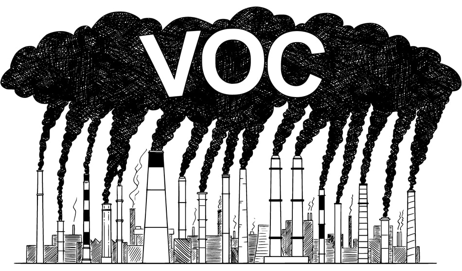

|
Many small communities’ main source of economy is tourism and outdoor recreation. The tourists—hunters, vacationing families, hikers, etc.—do not expect to see oil tanks and noisy machinery when travelling. According to the National Park Service, “237 million park visitors spent an estimated $14.5 billion” which supported over 234 thousand jobs. The visitors’ money also gave the workers “$9.7 billion in labor income … and $28.6 billion in economic output in the national economy.” Quotes from The Wilderness Society and The National Park Service |
The unsightly effects of oil and gas can degrade visitors’ experience on public lands. Image by Mason Cummings |
|
The oil industry is one of the largest industrial sources of volatile organic compounds (VOC) emissions; volatile organic compounds are a group of chemicals which contribute to the formation of ground-level ozone. These VOC emissions are a major factor of the release of air toxics, which, if exposed to, could “[aggravate] asthma, [increase] emergency room visits and hospital admissions, and premature death.” Quote from The Environmental Protection Agency |
 |
|
These toxins can also negatively affect the health of living beings, specifically female reproductive health. Dr. Richard Judson is a researcher at the United States Environmental Protection Agency’s Center for Computational Toxicology and Exposure. Dr. Judson works to select the proper dispersants to use for the needed oil spill. Dispersants "are a chemical agents … that help break up an oil slick into very small droplets, which dilute throughout the water." Dr. Judsons says that some of these dispersants are potentially estrogenic. Some dispersants contain nonylphenol, a molecule whose compund is similar to estrogen. When an animal is exposed to a nonylphenol dispersant at the wrong time, there is a possibility of intersex. This can lead to infertility and reproductive transact cancers. Quote from Oil Spill Prevention information from Dr. Judson's lecture shown to the right. |
|